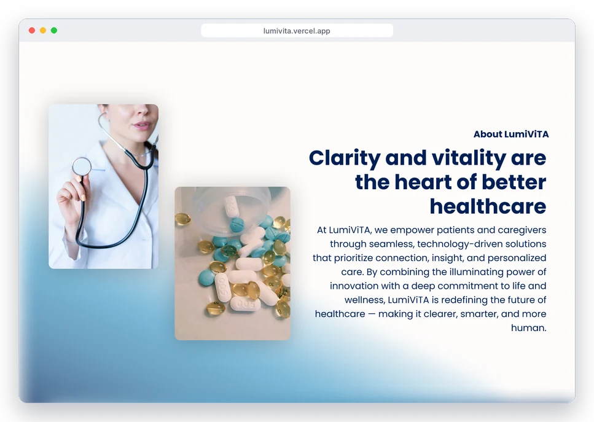

A name and brand built around light
The name went through several rounds in Figma: from a placeholder, to ClearCARE, to Soara, to LumiViTA, combining lumi (light) and vita (life). The tagline evolved with it, from a functional "Streamlining Patient Care with Personalized Insights and Seamless Coordination" to the simpler "Bringing Light Into Your Life." I paired deep navy with bright blues and soft, flowing backgrounds so the brand feels calm and hopeful instead of clinical.
Placeholder→ClearCARE→Soara→LumiViTA
